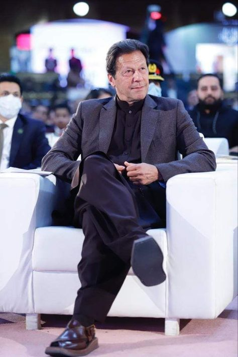

Imran Ahmed Khan Niazi is a Pakistani former cricketer, philanthropist, and politician who served as the 19th prime minister of Pakistan from August 2018 until April 2022. As a cricketer, he captained the Pakistan national cricket team to victory in the 1992 Cricket World Cup. Wikipedia Born October 5, 1952 (age 73 years), Lahore Previous offices Prime Minister of Pakistan (2018–2022) · See more Spouse Bushra Bibi (m. 2018), Reham Khan (m. 2014–2015), Jemima Goldsmith (m. 1995–2004) Party Pakistan Tehreek-e-Insaf Children Kasim Khan, Sulaiman Isa Khan Education Keble College (1972–1975), Royal Grammar School (1971–1972), Aitchison College
Field Marshal Syed Asim Munir Ahmed Shah NI HJ HI is a Pakistani military officer who is currently serving as Pakistan's first Chief of Defence Forces and the 11th Chief of the Army Staff of the Pakistan Army concurrently. Prior to becoming the COAS, he was posted at the GHQ as quartermaster general. Wikipedia Born 1968 (age 58 years), Rawalpindi Office Chief of Army Staff of Pakistan Education Officers Training School, Command and Staff College Quetta Awards Nishan-e-Imtiaz Previous office Director-General of Inter-Services Intelligence of Pakistan (2018–2019) Parents Syed Sarwar Munir